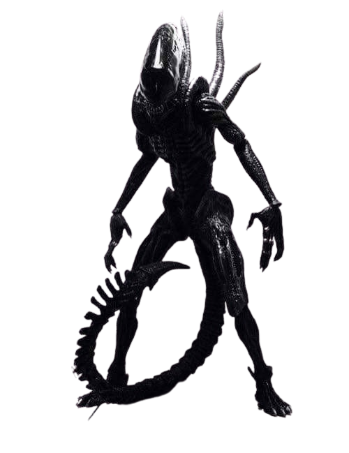

Murat Mutlu
Tarih Öğretmeni, Eğitim Teknolojileri Geliştiricisi
Yazılar
Dersler
Takvim
Arşiv

| Ders / Saat | Pazartesi | Salı | Çarşamba | Perşembe | Cuma |
|---|
Tarih araştırmaları sırasında çekilen saha fotoğrafları, orijinal posta pulları / efemera belgeleri ve seçkin video kayıtları arşividir.
Anadolu ören yerleri, antik tiyatrolar, kervansaraylar ve tarihi anıtların yüksek çözünürlüklü saha fotoğrafları (Blogger altyapılı).
Osmanlı son dönemi ve Cumhuriyet ilk yıllarına ait posta pulları, ilk gün zarfları ve efemera belgeleri arşivi.
Tarih metodolojisi, konferanslar, belgeseller ve canlı analizlerin yer aldığı YouTube & Vimeo video koleksiyonu.
Merhaba, ben Murat.
Tarih öğretmeni ve Eğitim Teknolojileri Geliştiricisiyim.
Tarih eğitimimi Fırat Üniversitesi, Uluslararası İlişkiler eğitimimi ise Anadolu Üniversitesi’nden aldım.
2011-2012'de Fırat Üniversitesi Bilgi İşlem Daire Başkanlığı AR-GE Birimi'nde editörlük yaptım; bu süreçte birimin yürüttüğü projelerin yanı sıra üniversitenin Atatürk İlke ve İnkılapları Enstitüsü'nün internet sitesini kurup içerik yöneticiliğini üstlendim.
2013-2014 arasında Türkiye Eğitim Gönüllüleri Vakfı (TEGV) bünyesinde Batman ve Trabzon'da yaklaşık 11 ay gönüllü eğitmenlik yaptım; ardından bir dönem boyunca farklı okulları dolaşan Ateşböceği Gezici Eğitim Tırı sorumluluğunu da kapsayan 3 haftalık bir staj eğitimi aldım.
Bunun ardından Batman'da farklı köy okullarında birleştirilmiş sınıflara sınıf öğretmenliği, İkiköprü'deki Turgut Özal İlkokulu'nda ise 4. sınıf öğretmenliği yaptım.
Son 8 yıldır Özel Batman Boğaziçi Koleji'nde Tarih öğretmeni ve zümre başkanı olarak görev yapıyorum. Öğrencilerimin tarihle bağ kurmasını, geçmiş ile bugün arasında köprü kurabilmesini önemsiyorum; bu nedenle müze ziyaretleri düzenliyor, işlediğimiz konularla ilişkili kitap, film, dizi ve müzikleri derslerde tartışmayı çalışmalarımın merkezine koyuyorum.
Covid-19 pandemisi nedeniyle okulların kapanmasının ardından okulun uzaktan eğitime geçişini koordine ettim. Okul bünyesinde görevli öğretmen ve idari personele Dijital Güvenlik, Siber Zorbalık ve Uzaktan Eğitim Araçları konularında eğitim verdim.
13 yıllık meslek hayatım boyunca öğrenci ve sınıf temelli öğretim tekniklerini benimsemeyi ilke edindim. Alanımla ilişkili kültür, siyasi tarih ve uluslararası ilişkiler ile kitap, sinema ve müziğe duyduğum merakı derslerime disiplinler arası bir bakış olarak taşımaya çalışıyorum.
Verdiğim dersler; Tarih, İnkılap Tarihi, Türk Düşünce Tarihi, Çağdaş Türk ve Dünya Tarihi, Medya Okuryazarlığı, Sosyal Bilim Çalışmaları, Uluslararası İlişkiler.
Geniş ilgi alanım ve merakım nedeniyle; Türkiye'de Dezenformasyon Direnci İnşa Etmek (NATO, Bilgi Üniversitesi), Arkeolojik Varlıkların Korunması ve Kurtarılması Programı (Koç Üniversitesi), Açık Veri ve Veri Görselleştirme (Veri Kaynağı, İzlemedeyiz), Avrupa Birliği Eğitimi (Konrad-Adenauer-Stiftung, Ege Üniversitesi), ve Uluslararası İlişkiler Sertifika Eğitimi (Ankara Üniversitesi) eğitim programlarını tamamladım.
Öğrencilik yıllarımda Eskiçağ ve arkeolojiye duyduğum merakla, Anadolu’nun önemli Neolitik bölgelerinden olan Kortik Tepe ve Gre Abdurrahman arkeolojik kazılarına katıldım. Yıllar içinde farklı ülkelerden edindiğim geniş(leyen) bir kartpostal ve pul koleksiyonum var.
Bu kişisel sitede çalışmalarımın yanı sıra, zaman zaman okuduğum kitaplar, izlediğim filmler ve dizilerle ilgili notlarımı paylaşıyorum.